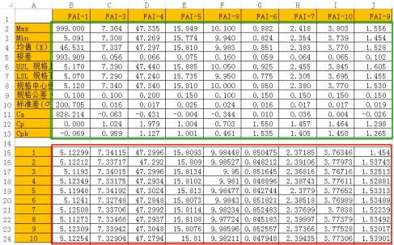
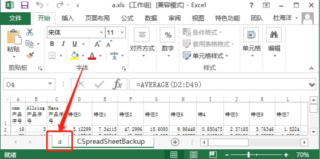

实际生产项目中往往有记录生产数据的需求，记录生产数据往往以Excel表格的形式导出呈现。当客户所需要的Excel表格格式固定时，即表格填入数据分布与计算公式结果等组织形式固定化，可将该固定化的Excel文件作为模板，只将生产数据覆盖写入到Excel相应单元格位置。Excel模板写入工具就完成了此种功能。
模板文件如图1所示，其中红框中的内容为生产数据写入单元格，而绿色方框中的数据为模板数据或公式自动计算结果。生产中只需覆盖写入生产数据部分，而让绿色框中的数据自动做更新。

| 分类 | 参数名称 | 参数描述 |
|---|---|---|
| 属性窗口 | Excel文件路径 | Excel模板文件的完整路径 |
| 工作表标签名 | Excel模板单元格所在的工作表标签名字 | |
| 起始写入行ID | 指生产数据写入的起始行的行号，如图1中的起始行号为15 | |
| 起始写入列ID | 指生产数据写入的起始列的列号，如图1中的起始列号为B | |
| 数据表名称 | 需要查询的数据表的名称（前提是需要连接到表所在的数据库），同数据库查询工具 | |
| 查询项 | 需要查询的列的名称，同数据库查询工具 | |
| 查询条件 | 满足查询条件的逻辑表达式（多条件使用and、or或者()）。比如：半径>60 AND半径<65，或者稍复杂的：列名1= ‘Aa’ and 列名2= ‘Bb ’ and (列名3 = 888 or 列名4 = 888 )，同数据库查询工具 | |
| 图像窗口 | 无 | |
| 数据链 | Excel文件另存路径 | 因为Excel模板文件写入生产数据后，若保存将覆盖掉原Excel模板；因此要另存为新Excel文件，该数据链即为另存路径 |
| 高级界面 | 无 |
| 分类 | 参数名称 | 参数描述 |
|---|---|---|
| 监视窗口 | 执行结果 | 工具执行结果。 |
| 执行时间 | 工具执行时间。 | |
| 图像窗口 | 无 | |
| 数据链 | 无 |
Excel模板写入工具实际上是在现有excel模板（如Sample文件夹下的ExcelModel.xls）上填充生产数据的工具，而CPK等参数在生产数据填充后，可以通过excel公式自动进行计算显示在excel文件中。
即为CPK原始模板文件路径，只支持.xls文件，且路径中不支持中文路径；
即.xls模板文件的工作表标签名，不支持中文。如图2；

即CPK写入原始模板后形成的新excel文件的保存路径。该路径为字符串类型，可以通过数据包生成工具与字符串格式化工具生成。该路径需要包含完整路径与文件命名，并以.xls为结尾，且不支持中文。如“C:\Users\blabla \Desktop\Excelcpk\new.xls”。
此工具要与数据收集工具配合使用。是将数据表查询项中的数据写入到Excel模板文件中，写入的起始位置为该工具所设置的起始行和列；写入数据的行数和列数依赖于查询的行数和查询项个数；
此工具只对Excel模板文件的生产数据部分进行覆盖写入，而保持了原模板的其他单元格的计算公式，因此在查看Excel文件时，相应的公式单元格将自动计算；
该工具可以保持模板文件中固定单元格的数值和计算公式，但无法保持其单元格格式，如字体和背景颜色等；
关于数据表查询的操作参见“数据库查询工具”操作手册；
写入数据的最大列数不能超过IV（256），最大行数不能超过65536；
参见“\Samples\Excel模板写入.gvp”，引用的excel模板文件见\Samples\ExcelModel.xls。